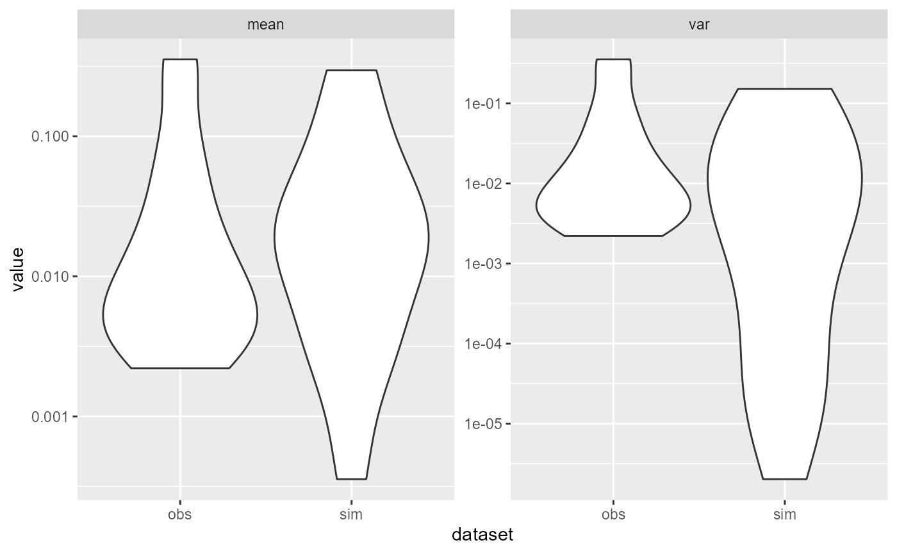

Casestudy.Rmd
library(lnmDIMS)
#load(system.file("data/PregnancyClosed15.RData", package="lnmDIMS"))
#use_data(PSPreg)
data(PSPreg)
#data("PregnancyClosed15")
raw_data<-PSPreg$Vaginal_Swab@sam_data
table<-PSPreg$Vaginal_Swab@otu_table
otu_sam<-table
otu_sam<-as.matrix(otu_sam@.Data)
temp = as.data.frame(apply(otu_sam, 2, sum))
top = top_n(as.data.frame(apply(otu_sam, 2, sum)), n=20)
#> Selecting by apply(otu_sam, 2, sum)
unique = unique(raw_data$DelDate)
top_name = rownames(top)
preg_data = otu_sam[,colnames(otu_sam) %in% top_name]
count = vector()
i = 1
for(uni in unique){
count[i] = nrow(raw_data[raw_data$DelDate==uni,])
i = i+1
}
n_person = 40
data_list <- list(n_species = ncol(preg_data)-1, n_clust = 5, y = preg_data, n_person = 40,count = count)
result = cal_fit_clust_multinomial(data_list)
#> ------------------------------------------------------------
#> EXPERIMENTAL ALGORITHM:
#> This procedure has not been thoroughly tested and may be unstable
#> or buggy. The interface is subject to change.
#> ------------------------------------------------------------
#> Gradient evaluation took 0.015715 seconds
#> 1000 transitions using 10 leapfrog steps per transition would take 157.15 seconds.
#> Adjust your expectations accordingly!
#> Begin stochastic gradient ascent.
#> iter ELBO delta_ELBO_mean delta_ELBO_med notes
#> 100 -980935.573 1.000 1.000
#> 200 -455507.570 1.077 1.154
#> 300 -290469.986 0.907 1.000
#> 400 -209580.922 0.777 1.000
#> 500 -168540.792 0.670 0.568
#> 600 -141855.139 0.590 0.568
#> 700 -123628.016 0.527 0.386
#> 800 -109766.217 0.477 0.386
#> 900 -99979.781 0.435 0.244
#> 1000 -92259.113 0.399 0.244
#> 1100 -85625.968 0.307 0.188
#> 1200 -80368.044 0.198 0.147
#> 1300 -76047.006 0.147 0.126
#> 1400 -72296.059 0.114 0.098
#> 1500 -69050.357 0.094 0.084
#> 1600 -66212.024 0.080 0.077
#> 1700 -63831.062 0.069 0.065
#> 1800 -61592.503 0.060 0.057
#> 1900 -59569.548 0.053 0.052
#> 2000 -57887.057 0.048 0.047
#> 2100 -56281.775 0.043 0.043
#> 2200 -54936.569 0.039 0.037
#> 2300 -53758.342 0.035 0.036
#> 2400 -52681.283 0.032 0.034
#> 2500 -51700.789 0.029 0.029
#> 2600 -50854.403 0.027 0.029
#> 2700 -50039.422 0.025 0.024
#> 2800 -49363.893 0.022 0.022
#> 2900 -48723.220 0.020 0.020
#> 3000 -48045.516 0.019 0.019
#> 3100 -47504.398 0.017 0.017
#> 3200 -47038.360 0.016 0.016
#> 3300 -46566.703 0.014 0.014
#> 3400 -46067.543 0.014 0.014
#> 3500 -45647.757 0.013 0.013
#> 3600 -45217.232 0.012 0.011
#> 3700 -44856.541 0.011 0.011
#> 3800 -44499.074 0.010 0.010
#> 3900 -44216.091 0.010 0.010 MEAN ELBO CONVERGED MEDIAN ELBO CONVERGED
#> Drawing a sample of size 1000 from the approximate posterior...
#> COMPLETED.
#> Finished in 66.6 seconds.
theta = result$theta
center = result$centers
person_effect = result$person_effect
prob_matrix = result$ts_matrix
temp_data <- tibble(
subject = rep(1:n_person, count),
cluster = theta
) %>%
mutate(subject = as.factor(subject))
initial_state = c(temp_data$cluster[1])
for(i in 2:nrow(temp_data)){
if(temp_data$subject[i]!=temp_data$subject[i-1]){
initial_state = c(initial_state,temp_data$cluster[i])
}
}
#n_depth as a number
#sim_data = sim_clust_multinomial(n_depth = round(mean(rowSums(preg_data)),0), n_species = ncol(preg_data), prob_matrix, length(count), count ,initial_state, center,sigma, person_effect)
#n_depth as a vector
sim_data = sim_clust_multinomial(n_depth = as.vector(rowSums(preg_data)), n_species = ncol(preg_data), prob_matrix, length(count), count ,initial_state, center,sigma, person_effect)
violin_plot(sim_data, preg_data,relative=TRUE)
heat_map(sim_data, preg_data, TRUE, TRUE)
specieswise_plot(sim_data, preg_data, TRUE)